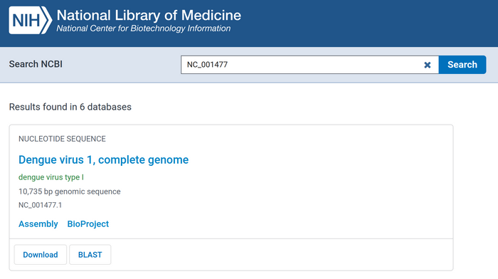
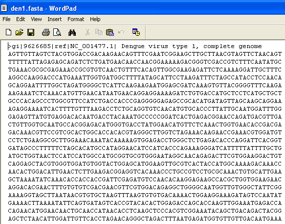
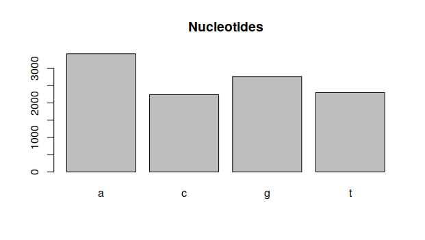
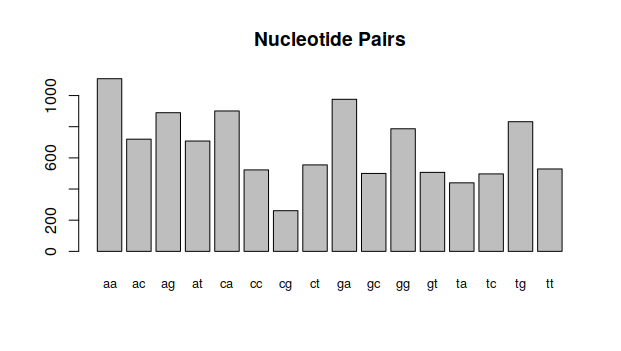

2.1.3 Gene Sequences
As mentioned in the lecture, there are many places where one can find sequenced genes. One of these is the NCBI Sequence Database which can be accessed via its website.
1 Finding gene sequence data
We are going to look for the data of the dengue virus, a mosquito transmitted virus which causes the dengue fever in tropical humid areas. For this, we look for the NC_001477 sequence in the search bar, and download it using the Download button. It must be saved in the Bioinformatics/workspace folder with the name dengue.fasta.

If you open this file in notepad, you will see the following:

After a line of descriptions, you should have the sequence of nucleotides found in the Dengue genome. Make sure to not change this file.
2 Using this file in R
By default, R doesn’t know how to load genome data. But other people wrote code that can load this data, and we can take advantage of this. To install the seqinr type in console the following:
install.packages("seqinr")This only needs to be done once. Once the library is installed in the system, you can load it with:
library("seqinr")And finally, load the data inside the dengue variable using:
dengue <- read.fasta("dengue.fasta")You can check the values in this variable by typing dengue. This will contain all the data set. To get only the nucleotides, we can do:
dengueseq <- c(dengue$NC_001477.1)this will result in a vector whose entries are the nucleotides. To check the entry, type denqueseq.
3 Simple Statistics
Now that we have the data in hand, what can we do with it? The first thing we can do is check nucleotide statistics. Let’s count how many of each of A, C, G and T we have.
> n1 <- count(dengueseq,1)
> n1
a c g t
3426 2240 2770 2299As you can see, the quantity of each nucleotide is not the same. We can see this more clearly with a barplot:
barplot(n1,main="Nucleotides")
Individual elements of the vector can be accessed either by position or by name:
n1[1]
n1['aa']Since the first is more explicit, it is often preferred.
These same statistics can be done for nucleotide pairs: AA , AC, AG, AT, CA, CC, CG, CT, GA, GC, GG, GT, TA, TC, TG and TT:
> n2 <- count(dengueseq,2)
> n2
aa ac ag at ca cc cg ct ga gc gg gt ta tc
1108 720 890 708 901 523 261 555 976 500 787 507 440 497
tg tt
832 529and plot them again:
barplot(n2,main="Nucleotide Pairs",cex.names=0.8)
4 Exercises
Manually, calculate the nucleotide statistics and draw the histogram for the following sequences.
ACTCGACGGT
CGCATTGTAG
ATATCGTAAT
CCGTGGGCCT
TCCGGGTGCC
TAATGCTATAAre the histograms that are identical? If yes, what is the relation between them? Is this relevant?